Case Study · New Feature Ideation
Rebuilding three features already live on a 500,000-user stock-quote app — technical charting, stock search, and post-market information — to match what the market had moved on to expect
Summary
Unlike the brand-new capabilities I pitched elsewhere on iWow, these three features already existed and already had users — which meant the job wasn't "should we build this?" but "this isn't good enough anymore." I rebuilt the technical charting screen from a single supporting indicator panel into a fully configurable multi-panel analysis tool, redesigned stock search around what investors were actually trying to find instead of just matching keywords, and led a full restructuring of post-market information into institutional, financial, and fundamental views — the kind of depth a 500,000-user app from Taiwan's largest financial-information provider should have had from the start.
Note — iWow is a Taiwanese product, so the interface screenshots throughout this case study remain in Traditional Chinese, their original language.
Background & Challenge
All three of these features had shipped early in iWow's life, solved a real problem at the time, and then just... stayed as they were, while the market around them kept moving. The technical charting screen still offered only one supporting indicator panel years after competitors had moved to multi-panel analysis. Search still matched purely on stock code or keyword, so a query like "TSMC-related futures" surfaced TSMC's own stock, warrants, and options before anything useful. And post-market information — despite Systex being Taiwan's largest financial-information provider — occupied barely a third of the screen.
None of these were net-new ideas; each was a case of taking something already in daily use and deciding, feature by feature, what a second generation of it should look like.
The Three Evolutions
From one supporting chart to a fully configurable analysis suite
Technical analysis is something nearly every investor opens iWow for, almost every day — combining chart timeframes with familiar indicators to decide when to buy or sell. The original screen offered only a main chart (with a choice of three chart types) plus a single supporting panel of roughly ten indicators — not enough range for an investor who wanted to cross-reference several signals before acting.
I redesigned the charting screen to support one main chart plus up to three supporting indicator panels, each drawing from a library of 24 indicators — including RSI, MACD, Bollinger Bands, Parabolic SAR, Williams %R, BIAS, and PSY — so an investor could reference several signals side by side instead of switching between screens. I also layered in the smaller details that mattered in daily use: a long-press gesture to reveal a price-reference line, ex-dividend/ex-rights date tags overlaid directly on the chart, a customizable dropdown for jumping straight to frequently used indicators, and the ability to set a different moving-average period for each chart timeframe.
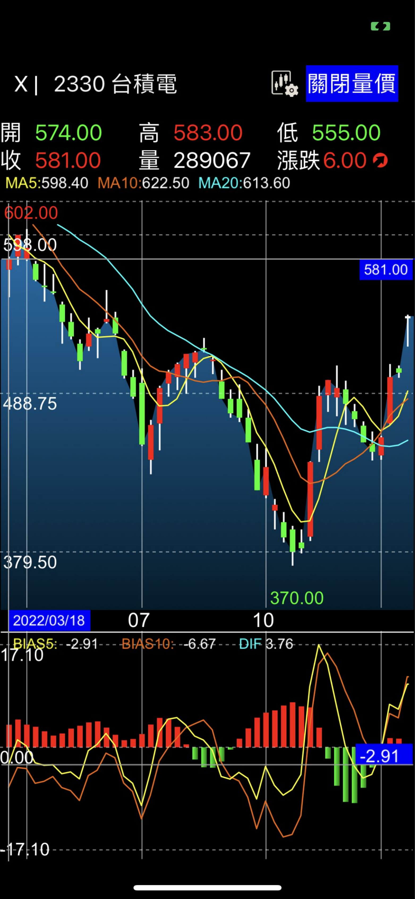
Before — one main chart + a single indicator panel
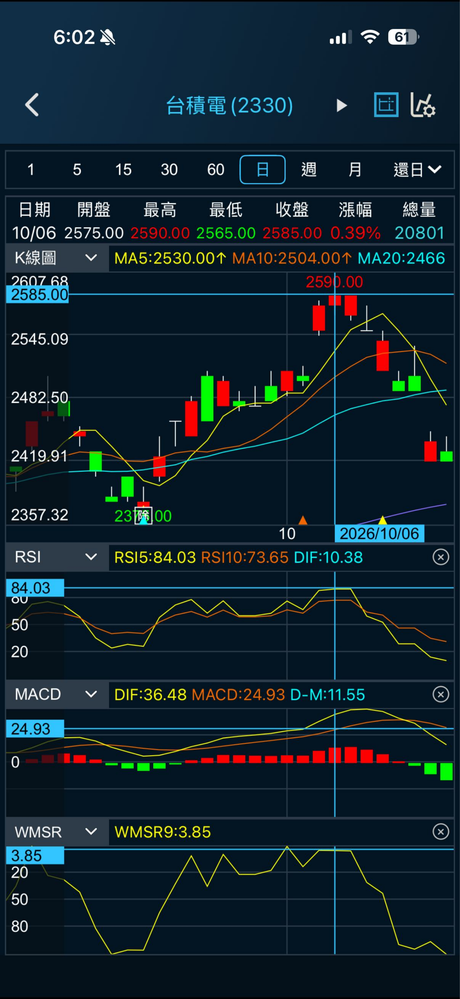
After — main chart + up to three configurable indicator panels
Holding anywhere on the chart reveals a reference line at that price, letting an investor check a specific level against the chart without zooming or scrolling.
Dividend and rights-adjustment dates appear as tags directly on the price chart, so a sudden price move is never mistaken for a trend change.
A configurable dropdown menu lets investors jump straight to the handful of indicators they actually use, instead of digging through all 24 every time.
Moving-average periods can be set independently for each chart timeframe, so a 5/10/20-day setup on the daily chart doesn't have to carry over to the weekly one.
Configuring a panel follows the same flow throughout: pick which indicators appear in it, then tune each one's own settings — like the moving-average periods below.
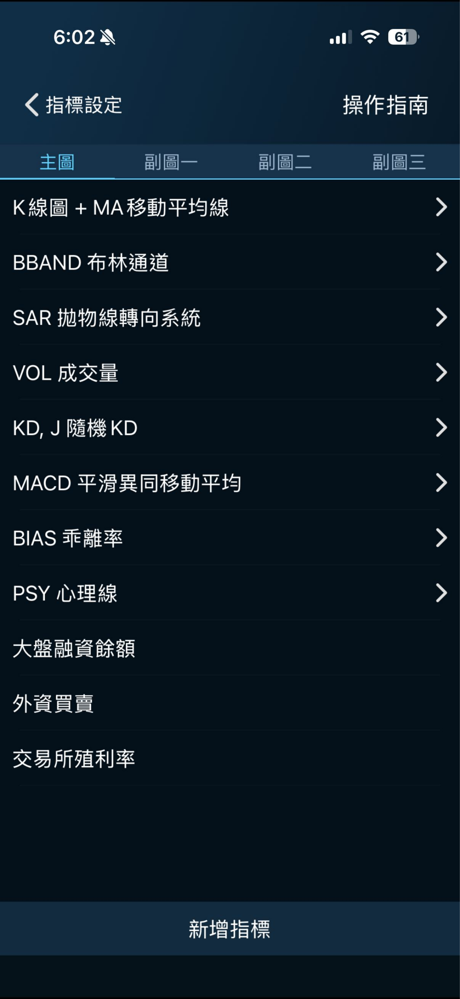
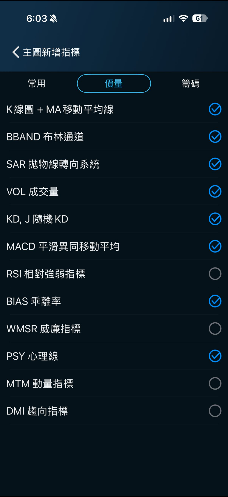
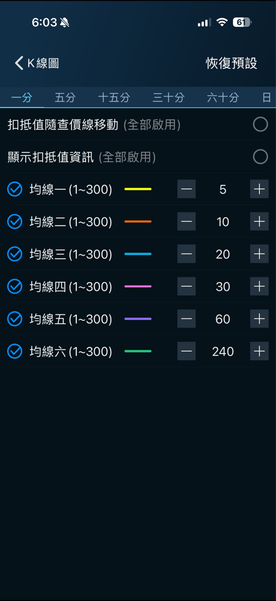
From keyword matches to results organized by what you're actually looking for
The original search only matched stock codes and keywords. Searching for something like "TSMC-related futures" surfaced TSMC's own stock, warrants, and options first, burying the futures contract the user actually wanted under results they didn't — forcing a lot of unnecessary scrolling to find it.
I added product-category tabs — stocks, ETFs, futures & options, warrants, and concept stocks — so a search lands directly on the right kind of instrument instead of one long mixed list. I also added a "Trending Among iWow Users" section surfacing what other users were searching, giving people a useful starting point even before they typed anything. And I let users add a result straight to their virtual portfolio or watchlist from the results list itself, removing the extra step of opening the stock's detail page first.
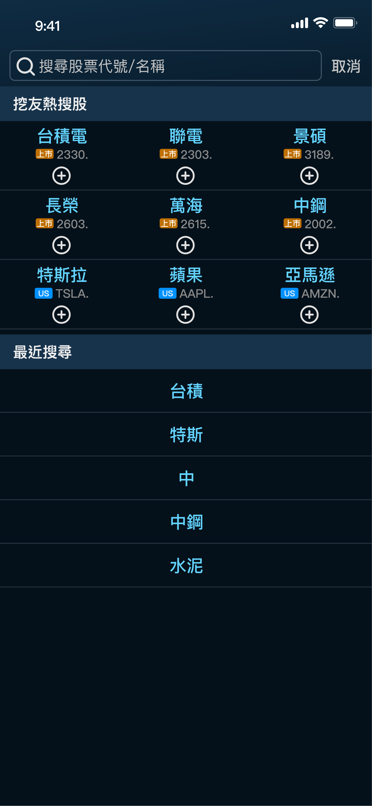
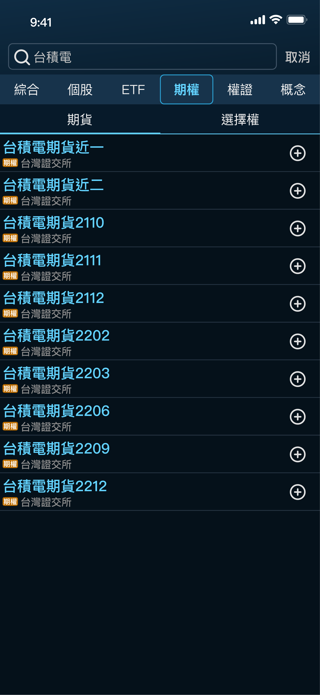
From a cramped afterthought to a complete post-market picture
Post-market analysis matters as much as the live trading session — tracking a company's operating condition and capital flows is core to deciding whether to invest. iWow's original post-market section was basic, occupying only about a third of the screen, even though Systex, as Taiwan's largest financial-information provider, had access to far more data than the app was surfacing.
Having just stepped into the Product Manager role, I restructured post-market information around three lenses: an Institutional & Chip Holdings view tracking net institutional capital flows and shareholding structure; a Financial view covering the three core financial statements — Profit & Loss, Balance Sheet, and Cash Flow — plus a financial-structure analysis report; and a Fundamentals view covering company profile, the stock calendar, and dividend policy. The redesign was driven by three goals: strengthening competitiveness against rival apps that already offered richer post-market data, growing time spent in-app after market close (when usage otherwise dropped sharply), and building iWow into a genuinely complete stock-tracking product rather than just a live-quote viewer.
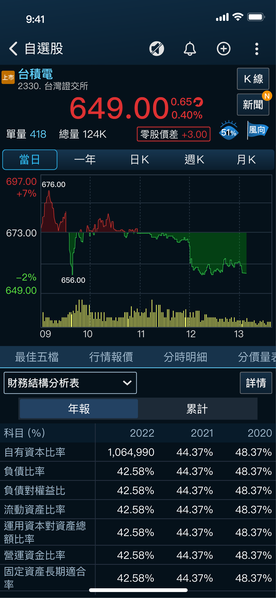
Before — a single financial-structure table, a third of the screen
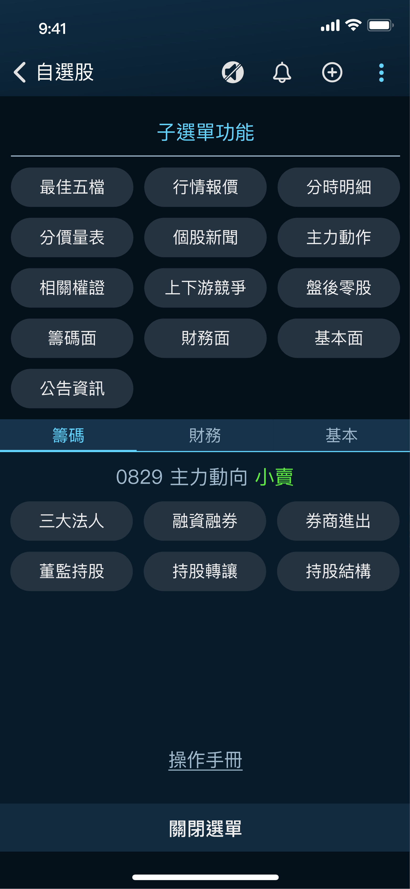
After — three dedicated views: Institutional, Financial, Fundamentals
Each of the three views went deep on its own dimension — net buying/selling by institutional investors, the full set of financial statements, and dividend/company data — rather than compressing everything into one small table.
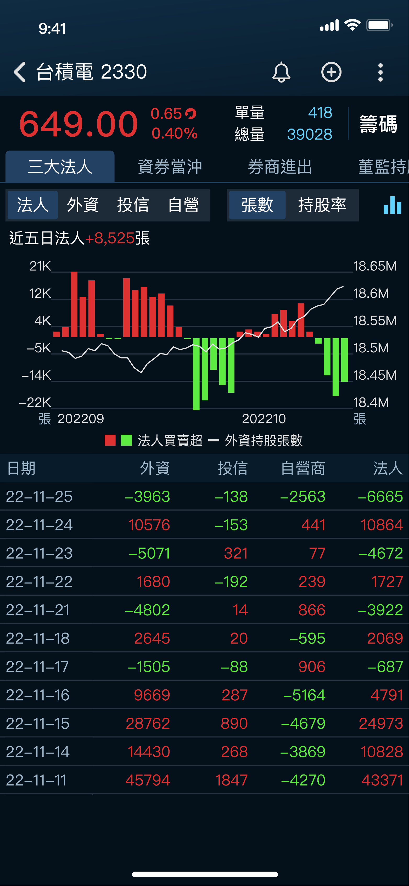
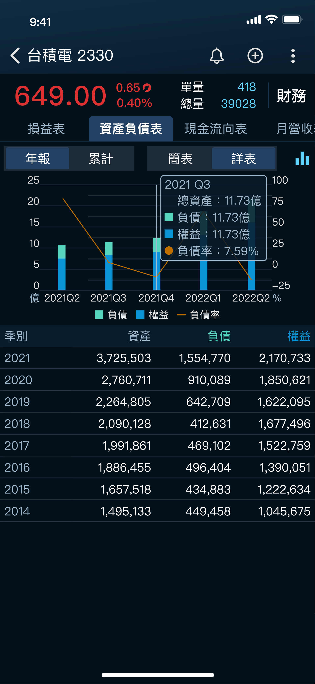
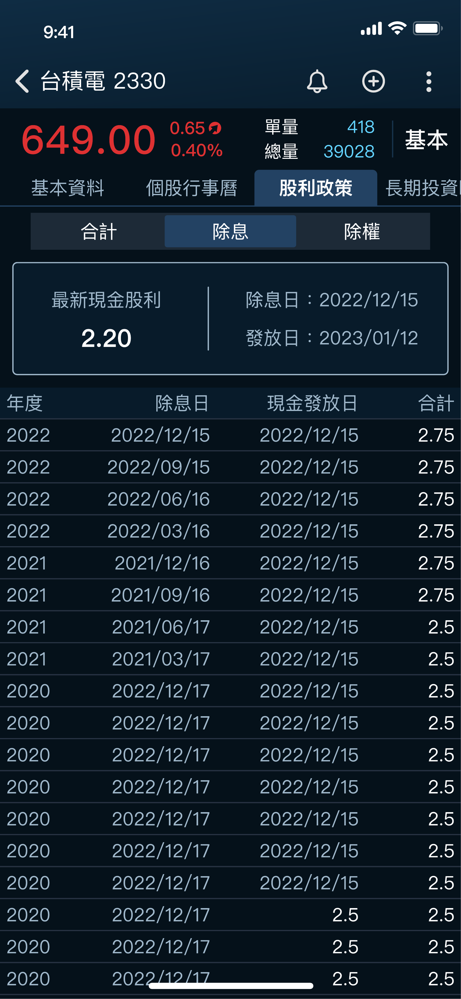
Outcome & Reflection
Technical charting and smart search both shipped to production and are still how iWow's 500,000+ users analyze and search for stocks today.
Post-market information played out differently. I spent four months on it — gathering and making sense of the underlying data, benchmarking what competing apps already offered, and designing how institutional, financial, and fundamental information should be organized — then carried the proposal through approval and handed a complete design to the engineering team. It's the one that stays with me: the proposal was approved and the design was finished, but engineering capacity got pulled toward other priorities right after the hand-off, and it was never built. A genuinely disappointing way for four months of work to end, even though everything up to that point — framing the problem, doing the research, designing the solution, getting it approved — went exactly as it should have.
Expanded technical charting from one main chart + one indicator panel to one main chart + three configurable panels across a 24-indicator library
Replaced keyword-only search with category tabs and in-line watchlist actions, cutting the steps between searching and acting on a result
Carried the post-market information redesign from data research through competitive analysis, design, and proposal approval